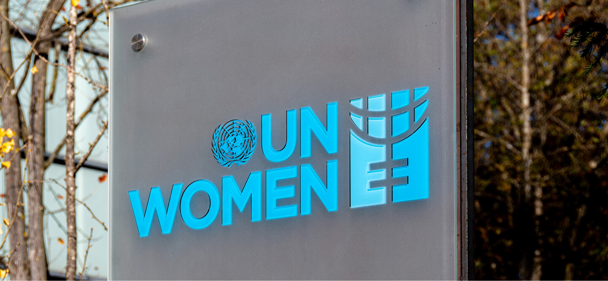
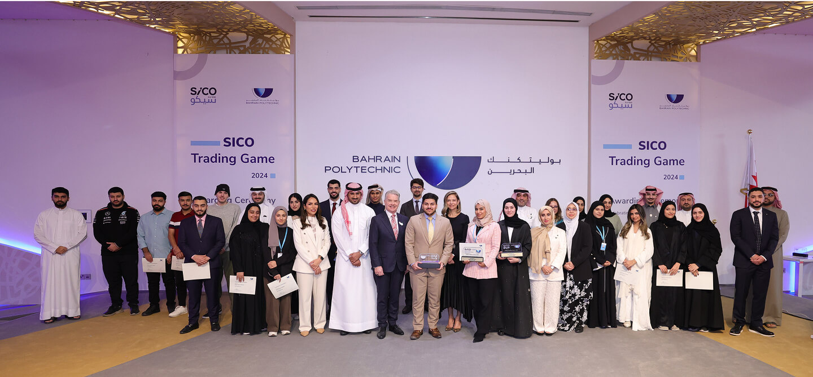
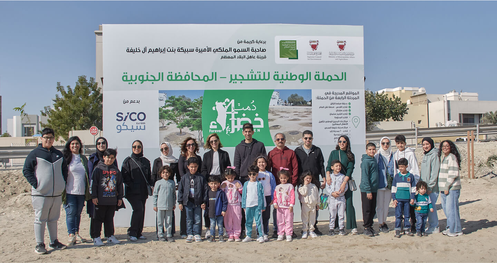
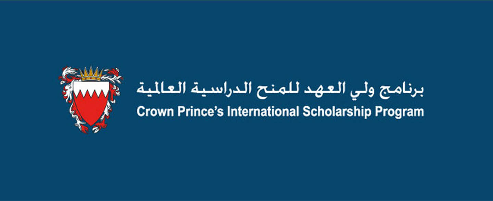

SICO Officially Becomes a Signatory to the Women’s Empowerment Principles (WEPs)
SICO signed the UN Women’s Empowerment Principles (WEPs), a UN initiative aimed at promoting gender equality and empowering women in the workplace, marketplace, and community. The move highlights SICO’s steadfast commitment to diversity, equity, and inclusion, aligning with initiatives like the Supreme Council for Women in Bahrain. SICO joins over 600 regional companies in advancing women’s equality. SICO has long championed women's empowerment through leadership programs, mentorship, and policies supporting work-life balance and female representation in senior management.

SICO Celebrates the Successful Completion of SICO LIVE Global Trading Game in Partnership with Bahrain Polytechnic
SICO, in collaboration with Bahrain Polytechnic, celebrated the graduation of participants from the SICO LIVE Global Trading Game, a simulated trading platform launched in November 2024. Over three weeks, 25 participants executed more than 1,000 trades using virtual funds and real market data, refining their skills in fundamental and technical analysis, order types, and risk management. The game generated a total profit exceeding USD 95K, with students exploring sectors like banking, technology, energy, and healthcare. Congratulations to all participants, especially winners Loay Aljabal, Bayan Ghazwan, and Zainab Majed!

SICO Advances Inclusive Workplace Policies Through SAWI Initiative
SICO continued its collaboration with Warsha Consultancy and Development on the “Support and Accelerate Women’s Inclusion” (SAWI) initiative, organized regionally by the American University in Beirut. As one of two local organizations advancing the project in Bahrain, SICO focused on implementing and monitoring inclusive policies, specifically refining its Work-from-Home Policy. Warsha provided structured feedback on policy restructuring, performance tracking, flexibility, staff well-being, and communication protocols. Following these enhancements, Warsha developed a policy implementation and monitoring tool for SICO to track progress and measure impact beyond the SAWI project.
SICO completes its fifth tree-planting effort
As part of an ongoing partnership with The National Initiative for Agricultural Development (NIAD)’s ‘Forever Green’ campaign, held under the patronage of Her Royal Highness Princess Sabeeka bint Ibrahim Al Khalifa, SICO completed its fifth tree-planting effort. Since the beginning of the campaign SICO planted 2,700 trees in urban areas, which is reflected in 48.6 tons of CO2e sequestration. The Group reaffirmed its commitment to playing a role in expanding green spaces in Bahrain with SICO’s team and their families collaborating to fight against climate change. This involves generating oxygen, absorbing carbon dioxide, enhancing air quality, promoting biodiversity, conserving soil, and contributing to Bahrain’s target of achieving net-zero carbon emissions by 2060.

SICO Establishes a Cybersecurity Research Lab at the Polytechnic
The Cybersecurity Research Lab is a leading hub for innovation and research, dedicated to developing solutions that protect digital assets, enhance national security, and expand cybersecurity knowledge. Designed to support academic researchers and postgraduate students, the lab provides cutting-edge infrastructure, including secure network environments, high-performance computing, and virtual collaboration platforms. It integrates with MSc programs in AI, Cybersecurity, and Computer Science by Research, fostering interdisciplinary collaboration. Supporting over 30 research projects annually, the lab partners with industry, government, and academia to drive impactful research, with a strong emphasis on real-world applications and knowledge dissemination through conferences and publications.
SICO Sponsors Crown Prince’s International Scholarship Program (CPISP)
The Crown Prince’s International Scholarship Program (CPISP), which SICO has contributed to for the past 19 years. The CPISP, is a program established by Bahrain’s Prime Minister and Crown Prince, HRH Prince Salman bin Hamad Al Khalifa, and operated through funding by the Crown Prince, as well as a number of local and international sponsors. The program seeks to support talented individuals in their academic journey. Since it first began working with CPISP, SICO has supported more than 195 scholars in pursuing higher education degrees at some of the world’s leading educational institutions.
